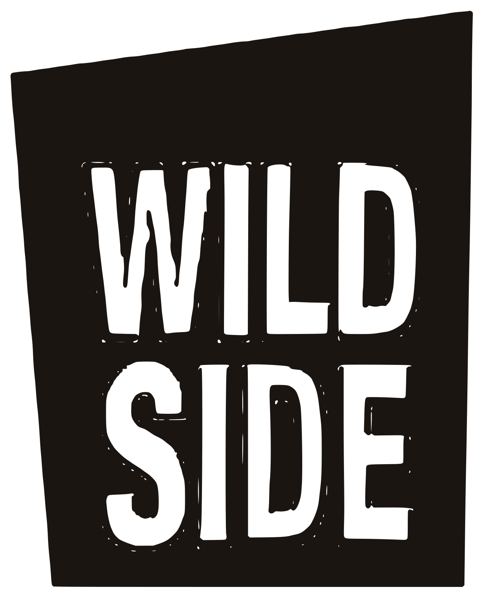

An der BarDas Glas.
Momo entwirft die Drinks, Derya führt die Bar. Die Karte wechselt; wer nicht wählen mag, sagt, was er mag.
Die Hausregeln · Oktober 2026
Nachbarschafts-Mixology-Bar Haasemannstraße 13 Hannover-Linden
Alles, was die Bar erkennbar macht, an einem Ort: die Wortmarke, die Farben und ihre Rollen, die Farben der DJ-Abende, die Schriften, das Eckschild als Form, die Bilder, die Gegenstände des Raums und der Ton. Damit jedes neue Stück, ob Plakat, Beitrag oder Karte, aussieht wie aus einem Guss.
01Haltung
Eine Nachbarschaftsbar in Linden-Mitte mit wechselnder Karte, deren Drinks Momo entwirft. An der Bar sagst du, was du magst, und unter der bedruckten Gewölbe-Decke wird es donnerstags bis samstags von 19 Uhr an lauter. Die Gestaltung ist nachts: laut, spontan, sexy, aber aufgeräumt.
Momo entwirft die Drinks, Derya führt die Bar. Die Karte wechselt; wer nicht wählen mag, sagt, was er mag.

Ein grosser Druck eines Kathedralen-Gewölbes, blau-silbern und golden angeleuchtet. Kalt oben, warm unten.

Donnerstag 19 bis 1 Uhr, Freitag und Samstag 19 bis 2 Uhr. Samstags legen DJs auf, an anderen Abenden spielen Bands.

Good Drinks, Good Music, Good Energy.
So steht es unter den Beiträgen der Bar.
02Zeichen
Die Wortmarke ist das Logo der Bar: WILD SIDE in einer schmalen, fetten Grotesk, ausgespart aus einer leicht schrägen Fläche. Sie ist Pfad für Pfad aus dem Logo der früheren Seite der Bar nachgezogen und wird immer als Datei eingesetzt, nie als Schrift nachgebaut.


Rund um die Wortmarke bleibt ein Viertel ihrer Breite frei. Kein Text, kein Bildrand, keine Linie ragt hinein.
Ab 32 Pixel Höhe am Bildschirm, im Druck ab 12 Millimeter. Darunter steht der Name der Bar als Text.
Sie steht so schräg, wie sie gezeichnet ist, in Rot, Creme oder Nacht, ohne Schatten und ohne Rahmen darum. Auf einem unruhigen Foto steht sie nie.
03Farben
Die Farben kommen aus dem Raum: die Nacht unter der Decke, das Creme der weissen Plakate der Bar, das Gold vom Rahmen des Eckschilds, das Rot der Wortmarke. Jede steht genau so in der Gestaltung der Website. Ein Klick auf eine Farbe kopiert ihren Wert.
Die dunklen Flächen, so wie die Bar nach 19 Uhr unter der Decke steht. Platten liegen wie das Eckschild auf der Nacht, geschrieben wird in einem warmen Hell.
Das Creme der weissen Plakate der Bar. Es trägt die hellen Kapitel; darauf wird in einem warmen Dunkel gelesen.
Gold ist der Rahmen des Eckschilds an der Hausecke: Haarlinie, Etikett, Knauf. Rot ist die Wortmarke, und nur als Punkt.
Die Farben der SESSION-Plakate, gemessen an den Plakaten: rot-cremefarbene Wellen und Ultramarin für die Schrift. Sie gehören nur zu den DJ-Abenden.
Gold rahmt. Nur als Haarlinie, Etikett und Knauf, nie als Fläche.
Rot ist ein Punkt. Die Wortmarke und der eine Hauptknopf, nie zwei grosse Flächen in Rot nebeneinander.
Nie rein. Kein reines Schwarz, kein reines Weiss: Nacht und Creme tragen alles.
04Die DJ-Abende
Für die DJ-Abende hat die Bar eine eigene Sprache: die SESSION-Plakate mit rot-cremefarbenen Wellen, der Schrift in Ultramarin und den DJs in Schwarzweiss. Diese Farben gehören nur zu den DJ-Abenden. Auf der Website liefern die Plakate Farbe und Material, sie sind nie das Hauptbild.


#D21C0AUltramarin#1A00AAPlakatcreme#EBE2D805Schrift
Prata für die Titel: eine einzige Stärke, nie fett, nie kursiv. Hanken Grotesk für alles, was gelesen wird, und in Versalien gesperrt für Etiketten und Knöpfe. Zahlen stehen in Hanken mit gleich breiten Ziffern, Uhrzeiten im Fuss der Website in Prata.
Du sagst, was du magst.
Aa Bb Cc Dd Ee Ff Gg Hh Ii Jj Kk Ll Mm Nn Oo Pp Qq Rr Ss Tt Uu Vv Ww Xx Yy Zz Ää Öö Üü ß 0123456789
An der Bar sagst du, was du magst, und Momo macht dir einen Drink daraus. Samstags legen DJs auf, die Karte wechselt, und unter der Decke wird es von 19 Uhr an lauter.
Donnerstag bis Samstag ab 19 Uhr
Do19 bis 1 UhrFr und Sa19 bis 2 Uhr
06Form
Schwarz, mit Goldrahmen, nachts beleuchtet: das Schild an der Ecke Haasemannstraße ist die Form der ganzen Gestaltung. Platten liegen wie das Schild auf der Nacht, Kacheln sitzen ohne Rahmen darin, Knöpfe tragen einen runden Knauf.

Rot mit Creme-Knauf ist der Hauptweg, einmal je Fläche. Nacht mit Goldlinie und Gold-Knauf ist jeder Nebenweg.
Tickets, Platzkarten, Leuchtschrift-Optik, Sticker, Polaroids, Kreise und Siegel, Pillen-Reihen, Einkerbungen. Das alles gehört zu anderen Häusern.
07Bilder
Nach vorn gehören die Menschen und der Moment an der Bar: Momo mit dem Glas, Gäste, DJs und Bands, gerahmt vom Raum mit Decke, Glühbirnen und Schild. Die Fotos sind warm, oft orange; neben Creme und Ultramarin werden sie nicht beruhigt. Das ist der Kontrast der Bar: warmes Licht, kalte Decke.


08Gegenstände
Vier Dinge machen die Bar unverwechselbar. Sie liefern Farbe, Form und Licht für jede Gestaltung; keines wird als Zeichnung nachgemacht.

Der Schriftzug über der Vitrine, bei Konzerten auch «love». Er darf als Licht einmal angehen, nie als Schrift nachgebaut werden.

Schwarzes Kastenschild mit Goldrahmen an der Hausecke, nachts beleuchtet. Daraus kommen Platten und Knöpfe.

Der Druck eines Kathedralen-Gewölbes über dem ganzen Raum. Aus seinen Rippen kommt die Tapete.

Creme mit roter Schrift: «Eure Nachbarschafts-Mixology-Bar», Silvester, Jahrestage. Daher kommt das Creme.

Erst der Drink, dann die Musik.
Ein Konzert unter der Decke, März 2024.
09Ton
Die Bar duzt. Sie schreibt kurz, spontan und mit einem Augenzwinkern, nie in Werbesprache. Lieber eine echte Angabe (der Tag, die Uhrzeit, der Name des DJs) als ein Adjektiv. Die Karte wechselt, und genau so steht es da.
10Nachbarn
Im Haus laufen auch Culinarium, die Food-Pairing-Abende an der langen Tafel, und Dirty Chicken, Rudis Pop-up. Beide haben ihr eigenes Gesicht. Auf den Seiten der Bar stehen sie nur als Verweis: «Unsere Abende an der langen Tafel: Culinarium».
Nacht, Creme, Gold und ein Punkt Rot. Prata und Hanken. Das Glas, die Ecke, die Musik. Uhrzeiten von 19 bis 2 Uhr als Faden.

Kerzenlicht, Teller und die lange Tafel, eigene Schrift und eigene Farben. Gemeinsam ist nur das Haus und Momo an der Bar.